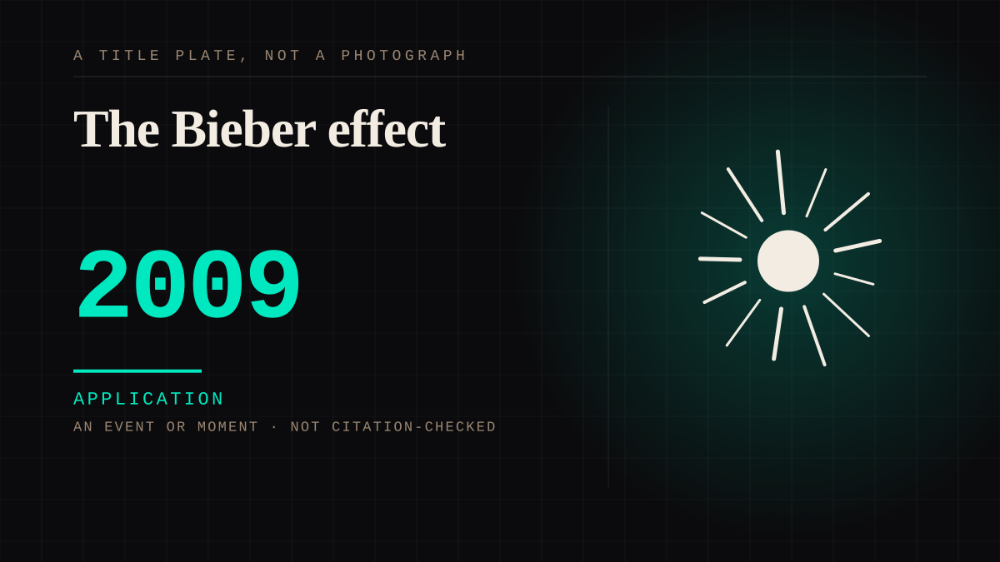

An event or moment · 2009 · Live
The Bieber effect
A performer with no media infrastructure becomes a global star through a video-sharing platform alone.

The first and clearest demonstration that a parasocial bond could be formed and monetised with no gatekeeper whatsoever. The platform was fourteen years old and the attachment was five.
Application. One-sided attachment put to work on purpose. Creator economies, community, fandom as infrastructure, and the things that genuinely help people. Not automatically good - a tool with an obvious use is a tool that will also get a bad one.
Where it sits
2000 2000-2009 · 2009 2009
Provenance · 2 source record(s)
- retrievableThe sequence, which is three gatekeepers rather than none. 2007-2008: 'Bieber's mother begins posting videos of her son performing on YouTube. Record executive Scooter Braun sees the videos and flies Bieber and his mother to Atlanta and signs the teen to a contract.' 2008: auditions for Usher and is signed to Island/Def Jam. May 2009: 'One Time'. November 2009: the My World EP. Also the detail the entry was missing: in November 2009 an appearance at Roosevelt Field Mall in New York 'must be canceled due to an out-of-control crowd of teen girls' - a parasocial mass event inside the entry's own year, rather than a chart position.Justin Bieber Fast Facts. CNN. ↗
- retrievableBieber's own account of the discovery layer, and the part that bypassed it: posting homemade covers from the age of twelve, 'It had a hundred views, then a thousand views, then ten thousand views, so I just kept posting more videos and more videos'. The piece also makes the chain explicit by comparison - 'Usher had "Star Search" to launch him out of obscurity at age 13. His new protege, Justin Bieber, had YouTube' - and records a bidding war, with Timberlake also interested before Usher won him for Island Def Jam.Adib, D. (2009, November 14). Pop Star Justin Bieber Is on the Brink of Superstardom. ABC News. ↗
Not yet stood behind. The entry is real. A person has not read the citation and confirmed it, so treat the date as approximate until they do.
Connected · 2 out, 0 in
It sits in
The full timeline → · The database → · See it in the atlas →